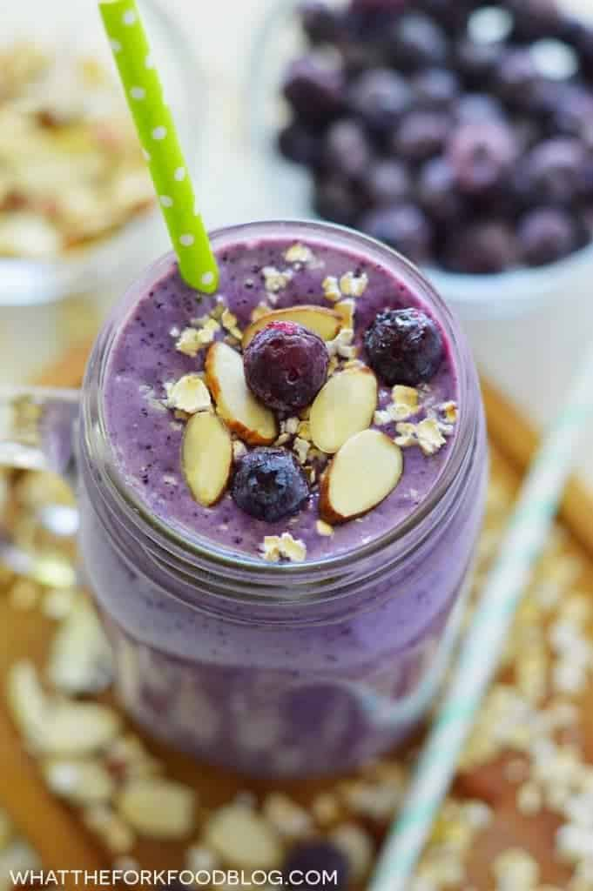

Almond Berry Smoothie

Description
Almond milk and almond butter are the star ingredients in this berry
smoothie for a nutritious, on-the-go meal that is vegan and
paleo-friendly.
Ingredients
- 1 cup frozen blueberries
- 1 banana
- ½ cup almond milk
- 1 tablespoon almond butter
- water as needed
Steps
-
Combine blueberries, banana, almond milk, and almond butter in a
blender; blend until smooth, adding water for a thinner smoothie.